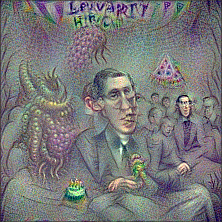

Walk-through
First of all, CLIPig-experiments are defined in YAML files. I actually prefer JSON but it does not support comments out of the box and is quite strict with those trailing commas and all that.. Anyways, the basic desires of defining lists and key/value maps are indeed quite human-friendly in YAML:
a_list: - first entry - second entry a_map: first_key: first value second_key: second value # a comment
And that's all to know about YAML for our purposes.
Now in CLIPig the desire for an image is expressed as a target. There can be multiple targets and each target can have multiple target features.
targets:
- features:
- text: a curly spoonTo follow the walk-through, call
python clipig-gui.py
then paste the code inside the editor (top-left one) and
press Alt-S to start training and watch the image
emerge in realtime.
So, what does the image look like?
Yeah, well... I promised images and now i'm showing nothing more than a psychedelic pixel mess.
But indeed, CLIP does think this image to be 95% similar to the words a curly spoon. This is a top score that an actual photo would rarely get and a classic example of an adversarial in machine learning.
To make it look more like an actual image we'll add some of those artistic variations, spoken of earlier. The art is in showing different parts of the image to CLIP when evaluating the feature similarities.
This is accomplished via transforms:
targets:
- features:
- text: a curly spoon
transforms:
- random_shift: 0 1
The random_shift transformation simply moves the image center to a random position, before each evaluation by CLIP. The edges are wrapped around so the outcome is actually a repeatable texture! The object of interest might just not be in it's center.
Apropos, the object of interest does look a tiny bit spoony to a human observer but not really, i'd say. There is a lot of curliness in the background but the spoon does not show as much.
Also, CLIP obviously missed the curliness of the spoon because actual letters appeared to increase the similarity nevertheless. It got to 50%.
Another method to inspire CLIP is random rotation.
targets:
- features:
- text: a curly spoon
transforms:
- random_rotate:
degree: -90 90
center: 0.3 .7
Each evaluated image is first rotated randomly between -90 and +90 degree with a random center in the middle 2/3rds of the image. This does not create a repeatable texture and the edges are typically a bit underdeveloped because they get rotated out of the visible area some amount of time.
The image shows some good areas with shiny metal and spoony curliness but it's still not quite recognizable as a spoon.
Let's jump forward and add some other stuff:
targets:
- batch_size: 5
features:
- text: a curly spoon on a plate
transforms:
- noise: 0.1*ti
- random_shift: -.1 .1
- random_rotate:
degree: -3 3
center: 0.3 .7
constraints:
- blur:
kernel_size: 31*ti
In desperation we just throw more computation at the problem by increasing the batch size. This results in a runtime of about 2 minutes on 1500 cuda cores.
Then, on a plate was added to the target text to make
CLIP somewhat more opinionated about the background.
Some noise is added to each image before showing it to CLIP and a gaussian blur is added to the backpropagation loss.
For details about the noise: 0.1*ti line, please check out the
expressions section. Sufficient to say that it
decreases the amount of noise over time.
The noise makes CLIPig kind of think twice about the way a pixel is adjusted. The blur as a training loss tends to blur out the areas where CLIP is not much interested in, while the points of interest are constantly updated and are not blurred as much. Unfortunately both methods also help to create new artifacts. And this is where those variations start to become artistic. It certainly takes some patience.
And maybe the correct language. What if we change the target
text to a photo of a curly spoon?

Ah, i see where you are going, CLIP! Indeed funny, but not enough for a proof-of-concept.
targets:
- batch_size: 5
features:
- text: close-up of a spoon with a curly handle
transforms:
- noise: 0.1
- repeat: 3
- random_rotate:
degree: -30 30
center: .4 .6
- center_crop: 224
constraints:
- blur:
kernel_size: 51
postproc:
- border:
size: 1 1
color: 0.15 0.1 0.05

Changes made:
- Noise and blur are kept at high values throughout the whole training.
- The text target is made extra specific.
- The repeat and center crop transforms help avoiding the under-development of the corners by the random rotation.
A post processing effect adds a small border that forces the contents to be created more in the center of the image instead of close to or on one of the repeating edges.
Post-processing effects are applied every epoch and change the image pixels directly without interfering with the backpropagation stage. All transforms that do not change the resolution are available as post processing effects.
There is not much else visible in the images because the
close-up of ... in the target text and, more profoundly,
the high noise and blur constraints do not allow anything
else to emerge.
Just to give an idea what CLIP is actually thinking about
curly spoons, the target text is replced with with
a lot of curly spoons and the noise value is lowered to
allow some more uncertainty in the resulting image:
There are some different concepts visible. Curls made of spoon faces, curls with interwoven spoon fragments and an actual head with curly hair, which probably is to be expected when using such a specific adjective.
The contrast of the image is not as good as the previous ones. Generally, CLIP does not require a lot of contrast to identify things so it's not automatically increased to normal levels. The previous images had a higher noise amount which actually increased the contrast because areas of low contrast simply disappear in the noise. Unfortunately, the high noise deviation only lets things emerge where CLIP is very certain about. Curly spoons do not represent a well-known archetype, it seems.
There is a trick, though! We can show CLIP the image with much less contrast so the changes it applies become larger changes in the final image.
targets:
- batch_size: 5
features:
- text: a lot of curly spoons
transforms:
- noise: 0.1
- repeat: 3
- random_rotate:
degree: -30 30
center: .4 .6
- center_crop: 224
- mul: 1./5. # [CLIP](https://github.com/openai/CLIP/) only sees 1/5th of the color range
constraints:
- blur:
kernel_size: 51
- saturation: # The desired saturation is lowered
below: .01
weight: 10.
postproc:
- border:
size: 1
color: 0.15 0.1 0.05
The mul transformation reduces the color range that CLIP is seeing so the resulting color range is increased. Of course, this also increases the saturation a lot so the saturation constraint is used to reduce it to acceptable levels.
I'll end this experiment here because my 3 years old kid clearly approves the image to depict curly spoons. And you should know the basic pieces now, that are needed to create your desired fantasy images.
Just go ahead, play with CLIPig and consume a lot of your life and work time. If stuck, check the reference and the lists of available transforms and constraints.
But there's one thing left: How do i increase the resolution?
Increasing resolution
Okay, let's start with a new theme. Take the curly spoon script
from above and replace the text with h.p. lovecraft at a
birthday party.

If you don't know Lovecraft, he's one of the earliest and spookiest fantasy authors with stories about creepy and unearthly things and obviously enough fan-art has found it's way into CLIP's convolutional weight matrices. The green guy there must be a children's birthday version of Cthulhu, an age-old murderous god living in the sea, waiting for a come-back as leader of a blood-thirsty army of fanatics.
Why does Lovecraft have .. ahh, two faces? Well, my personal feeling is that CLIP does not reject a face just because it's melted together with parts of other faces or not at the right place above the shoulders, aso. Similarity to Lovecraft at a birthday party got to 61%, despite the creepy head. CLIP just imagined the face at two different positions. If we continue training for long enough, it might correct the face. But only, if it increases similarity to the target feature.
Anyways, let's increase the resolution by putting this line in front:
resolution: 224*2
This is now twice the width and height of CLIP's image input window or four times as much pixels as before.
What did happen? Well, the center_crop transformation crops a CLIP-sized 224² window from the middle of a 448² image. It is not helpful unless to show us the effect of the random rotation.
We could add the random_shift transform to move the CLIP window to every position of the training image. Let's just do that and also increase the batch_size from 5 to 20 since we have 4 times the pixels to process.

There are many Lovecrafts now. It's like in this John Malkovich movie when John Malkovich truckles through the door that leads into his own head. There's even a body without a head.
Clearly, CLIP does not get a good view of the whole image but just assembles parts of it without the knowledge of how they relate to each other.
The random_scale transformation allows us to 'zoom' in or out of the image so we can show CLIP a mixture of the whole image and details of it.
Imagine a zoom, or scale, of 0.5 on the trained image. That would mean that CLIP sees twice as much in each direction or 4 times as much in the whole. Exactly or new resolution. Of course it would not look better than resizing an image to a larger resolution with some bilinear filtering. Well, not entirely. The noise and artifacts are of higher resolution ;)

Now, at some point in training we randomly scale between the full resolution and the zoomed-in details and enable the random_shift.
0. if t < .4 else 1. is python/CLIPig talk for
zero below 40% else one.
epochs: 300
resolution: 224*2
targets:
- batch_size: 20
features:
- text: h.p. lovecraft at a birthday party
transforms:
- noise: 0.1
- repeat: 3
- random_shift:
- 0
- 0 if t < .4 else 1.
- random_rotate:
degree: -30 30
center: .4 .6
- random_scale:
- .5
- .5 if t < .4 else 1.
- center_crop: 224
- mul: 1./5.
constraints:
- blur:
kernel_size: 51
- saturation:
below: .01
weight: 10.
postproc:
- border:
size: 1
color: 0.15 0.1 0.05
It's quite good at parts but, wait! There's already another Lovecraft developing in the background. And that's what is to be expected. The training target of that Lovecraftian party is simply applied at all points of the image and CLIP won't jude the whole frame less similar to the target when every face is that of Howard Phillips???.
The above snapshot is kind'o good but the repetitions will increase with higher resolutions. It would be more like a fractal of H.P.'s birthday party.
... Well actually, let's see a fractal of H.P.'s birthday party
Well done CLIP, well done.
But back to the topic
...